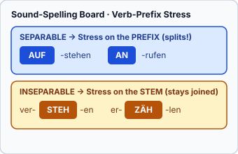

Betonung bei Verbpräfixen
Mit einem KI-Tutor lernen
Ein KI-Tutor erklärt dir diese Seite und hilft dir bei den Aufgaben. Wähl deinen Assistenten:
Mit Claude öffnen Mit ChatGPT öffnen Mit Mistral Vibe öffnen
Du nutzt dein eigenes Konto beim Anbieter. Der Assistent ist kein Angebot von lernapps.net: lernapps liefert nur Inhalte und Aufgaben. Die Wahl gilt für alle Seiten, nur auf diesem Gerät.
AUFstehen vs. verSTEHen: Der Akzent verrät die Grammatik
Peter notiert zwei Verben aus Herr Brauns Unterricht nebeneinander auf der Laut-Schrift-Tafel: AUFstehen (get up) und verSTEHen (understand). Im Deutschen hängen Aussprache und Grammatik hier direkt zusammen: Ist das Präfix betont, ist das Verb trennbar!
Aufgabe
Lösung
über-**SETZ**-en (auf dem Stamm – untrennbar) richtige Antwort
Richtig! *übersetzen* in der Bedeutung *translate* ist untrennbar: *Nadia übersetzt den Satz.*
**Ü**-ber-setzen (auf dem Präfix – trennbar)
Mit betontem *Ü-ber-* bedeutet es *mit einer Fähre ans andere Ufer fahren* (*to ferry across*).
Wenn du hörst, ob das Präfix betont ist, weißt du sofort, ob das Verb im Hauptsatz getrennt wird.

© CC0-1.0Peters Laut-Schrift-Tafel: Betontes Präfix = trennbar, betontes Stammverb = untrennbar.
Trennbare vs. untrennbare Verbpräfixe
| Präfix-Typ | Wo liegt der Akzent? | Typische Präfixe & Beispiele |
|---|---|---|
| Trennbar (separable) | immer auf dem Präfix | ab-, an-, auf-, aus-, ein-, mit-, vor-, zu-: AUFstehen, EINkaufen, ANrufen |
| Untrennbar (inseparable) | auf dem Verbstamm (Präfix unbetont) | be-, emp-, ent-, er-, ge-, ver-, zer-: verSTEHen, beGINnen, erZÄHlen |
Sonderfall: Doppel-Präfixe wie um- oder über-
Manche Präfixe (durch-, über-, um-, unter-) ändern mit dem Akzent sogar ihre Bedeutung: UMfahren (run over, trennbar) gegen umFAHren (drive around, untrennbar); überSETZen (translate, untrennbar).
Übung: Präfix oder Stamm betonen?
Aufgabe
Lösung
einkaufen richtige Antwort
Richtig! **EIN**-kaufen hat das betonte, trennbare Präfix *ein-* (*Ich kaufe ein*).
beginnen
*be-* ist immer unbetont und untrennbar: be-**GIN**-nen.
mitkommen richtige Antwort
Richtig! **MIT**-kommen betont das Präfix *mit-* (*Kommst du mit?*).
erklären
*er-* ist immer unbetont und untrennbar: er-**KLÄ**-ren.
Die acht untrennbaren Präfixe (*be-, emp-, ent-, er-, ge-, miss-, ver-, zer-*) tragen nie den Hauptakzent; Präfixe wie *ein-, auf-, an-, mit-* sind immer betont.
Aufgabe
Lösung
Richtige Antwort: aufmachen – AUF-machen (Präfix betont, trennbar); bekommen – be-KOM-men (Stamm betont, untrennbar); vorlesen – VOR-lesen (Präfix betont, trennbar); vergessen – ver-GES-sen (Stamm betont, untrennbar)
Präfixe wie *auf-, vor-* sind betont und trennbar; *be-, ver-* sind immer unbetont und untrennbar.
Aufgabe
Wähle die richtige Verbform im Hauptsatz: trennt sich das Verb oder bleibt es zusammen?
- Peter gets up early (AUF-stehen). → Peter … früh ….
- Nadia understands the question (ver-STEH-en). → Nadia … die Frage.
- Lukas calls Peter (AN-rufen). → Lukas … Peter ….
Lösung
- Peter steht früh auf.
- Nadia versteht die Frage.
- Lukas ruft Peter an.
Betontes Präfix → trennbar (steht … auf, ruft … an); unbetontes Präfix → untrennbar (versteht).
Fehler gefunden oder eine Idee für diese App?